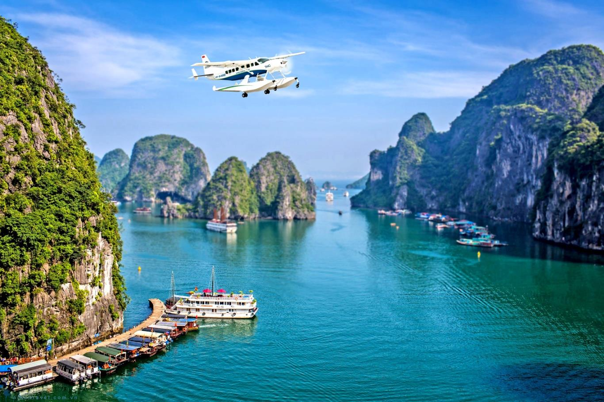
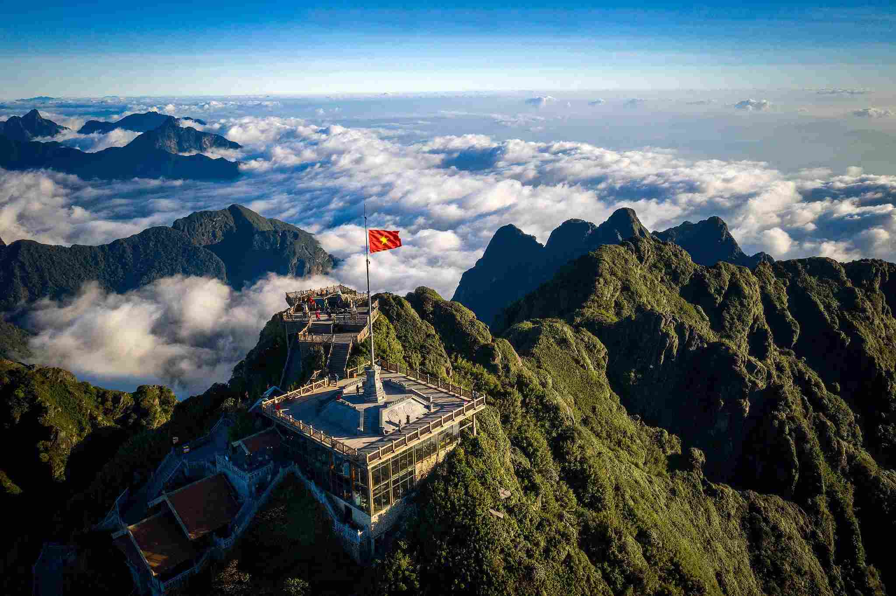

Ha Long Bay - A Natural Wonder
Ha Long Bay, located in Quang Ninh Province, is one of Vietnam’s most famous natural wonders. It is known for its emerald waters and thousands of towering limestone islands topped with rainforests. The bay is a UNESCO World Heritage Site and offers activities like boat cruises, kayaking, and cave exploration.
Sapa – Where Nature and Culture Meet in Harmony
Sapa, in northern Vietnam, is a mountainous town famous for its breathtaking rice terraces, misty landscapes, and rich cultural diversity. It is home to ethnic minority groups such as the H’Mong and Dao people. Visitors can enjoy trekking, exploring traditional villages, and admiring Fansipan—the highest peak in Indochina.
Hoi An – A Perfect Blend of History, Culture, and Charm

Hoi An is a well-preserved ancient town located in central Vietnam. Known for its charming streets, colorful lanterns, and traditional wooden houses, it is a UNESCO World Heritage Site. Hoi An is famous for its tailor shops, local cuisine, and historical architecture blending Chinese, Japanese, and Vietnamese influences.